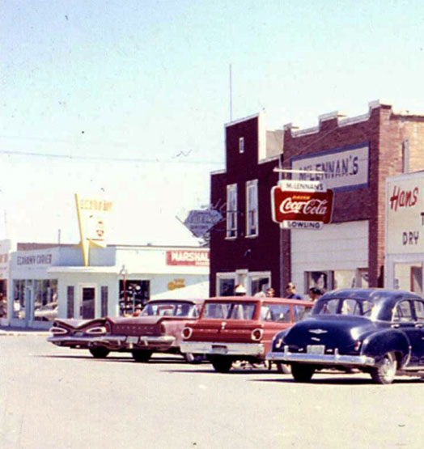
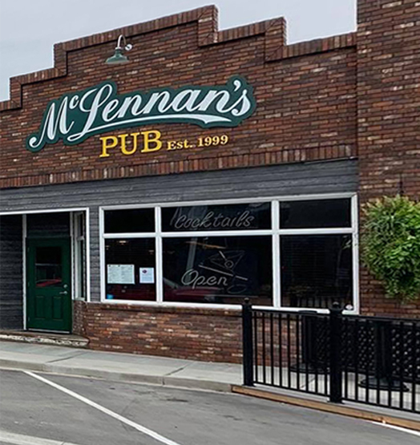

Coaldale is a small town located in rural Alberta, Canada. Coaldale is honestly one of the best examples of a rural small town most could think of. It is surrounded by farmland on all sides, with a couple of highways going into Lethbridge. People seldom go to Coaldale for activities or entertainment unless it is during an event. They do have some hometown restaurants that are a must-try like Wally’s Pizza and K.C.'s Pub and Grill, alongside a few recreation centers and parks for playing sports.

As mentioned before, they also hold some annual events such as a demolition derby, a candy parade, as well as Canada Day festivities. Being in Coaldale is a very homey experience for those from the big city looking for a secluded place to have some peace from the much worse hustle and bustle. The one downside is the geography of the town, as wind is a very well-known issue here year-round.